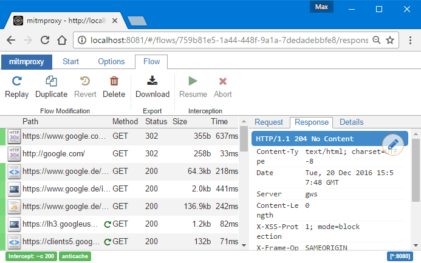
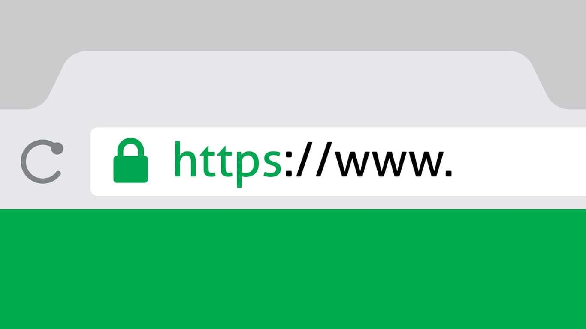
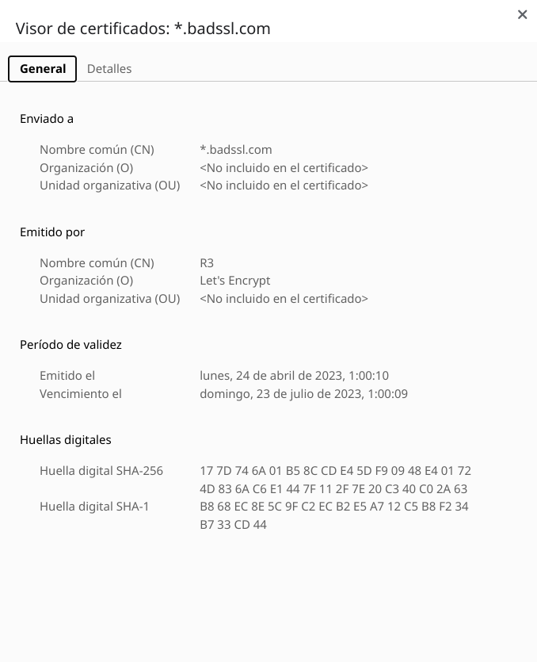
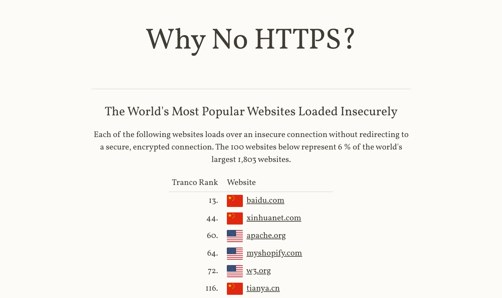
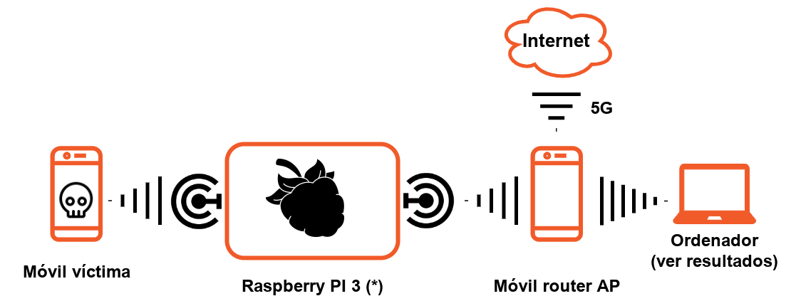
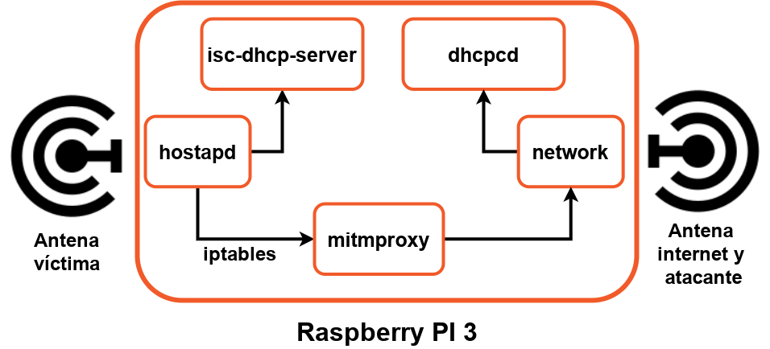
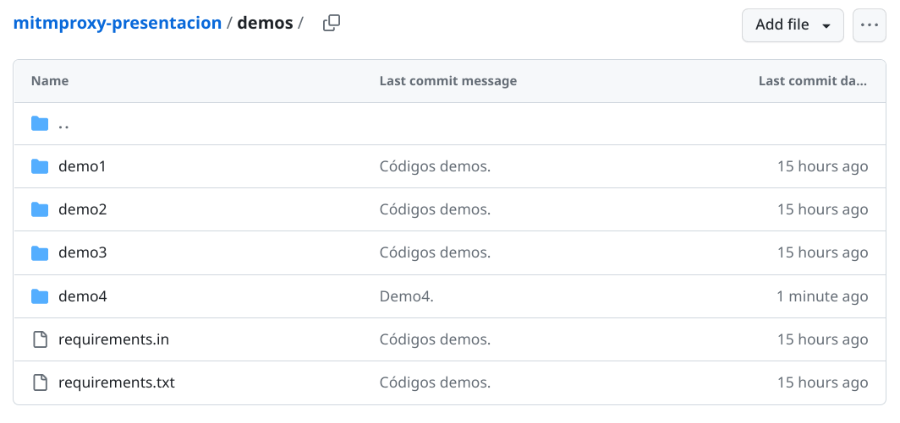

mitmproxy: ataques MitM con Python
{kind=link}
👋
{kind=link}
Sobre mí Nekmo

Programador Python |
{kind=link}
{kind=link}
Qué son
¿Qué es un proxy?
¿Y un ataque Man in the Middle?
¿Qué son los proxies?
{kind=link}
{kind=link}
{kind=link}
{kind=link}
{kind=link}
{kind=link}
Ataques Man in the Middle (MitM)
{kind=link}
opciones mitm
👁️ Leer
➕ Añadir
✏️ Modificar
Versión consola

Versión web
{kind=link}
Python API
from mitmproxy import http
def request(flow: http.HTTPFlow):
# redirect to different host
if flow.request.pretty_host == "example.com":
flow.request.host = "mitmproxy.org"
# answer from proxy
elif flow.request.path.endswith("/brew"):
flow.response = http.Response.make(
418, b"I'm a teapot",
)Demo
Casos de uso
{kind=link}
Sombrero blanco
Depuración de programas
Análisis de malware
Tests de integración
... y más.
¡Y los malos!
Sombrero negro
Espionaje.
Robo de información.
Phishing.
... y más.
¿Estoy en peligro?
SSL/TLS
{kind=link}
{kind=link}
¿Qué es el certificado?
{kind=link}
Certificado autofirmado
{kind=link}
Sin confianza
{kind=link}
Demo
Conclusiones sobre el cifrado
mitmproxy puede funcionar con sitios con cifrado SSL/TLS.
... Pero debe aceptarse el certificado inválido,
... o instalarse el certificado autofirmado en la máquina.
¿Cómo se realiza el ataque entonces?
Engañar a la víctima para que salte la pantalla advertencia.
Engañarla para que instale el certificado autofirmado.
Tomar posesión del dispositivo e instalar el certificado.
¿Pero quedan sitios sin SSL/TLS?
Webs sin HTTPS
{kind=link}
https://whynohttps.com/
Ejemplos de código
Caso 1
from mitmproxy import http
from bs4 import BeautifulSoup
def response(flow: http.HTTPFlow):
if "php" in flow.request.query:
text = flow.response.text
soup = BeautifulSoup(text, "html.parser")
for element in soup.find_all(re.compile(".+"), text=True):
element.string = re.sub(r"\w+", "PHP", element.string)
flow.response.text = str(soup)Caso 2
import re
from mitmproxy import http
from bs4 import BeautifulSoup
def request(flow: http.HTTPFlow):
flow.response = http.Response.make(
200, # (optional) status code
b'<style>'
b'h1 { animation: blinker 1s step-start infinite; color: red; font-size: 8em; text-align: center; }'
b'@keyframes blinker { 50% { opacity: 0; } }'
b'</style>'
b'<h1>VIVA PHP!!!1</h1>',
{"Content-Type": "text/html"}, # (optional) headers
)Demo: interceptar código WiFi
Accede a la demo
SSID: mitmdemo
Cómo funciona
{kind=link}
Cómo funciona RPI
{kind=link}
Componentes clave
dhcpcd: cliente DHCP del adaptador Wifi para Internet.
isc-dhcp-server: servidor DHCP del adaptador Wifi para la víctima.
hostapd: permite crear la red Access Point para víctimas.
iptables: enrutamiento entre el adaptador wifi y mitmproxy.
mitmproxy: escucha de las peticiones de la víctima.
Código demos
{kind=link}
¡Muchas gracias!
Referencias
¿Y la presentación?
Contactar
Sitio web: nekmo.com
Email: contacto@nekmo.com
Twitter: @nekmocom
Telegram: @nekmo
Jabber: nekmo@nekmo.org